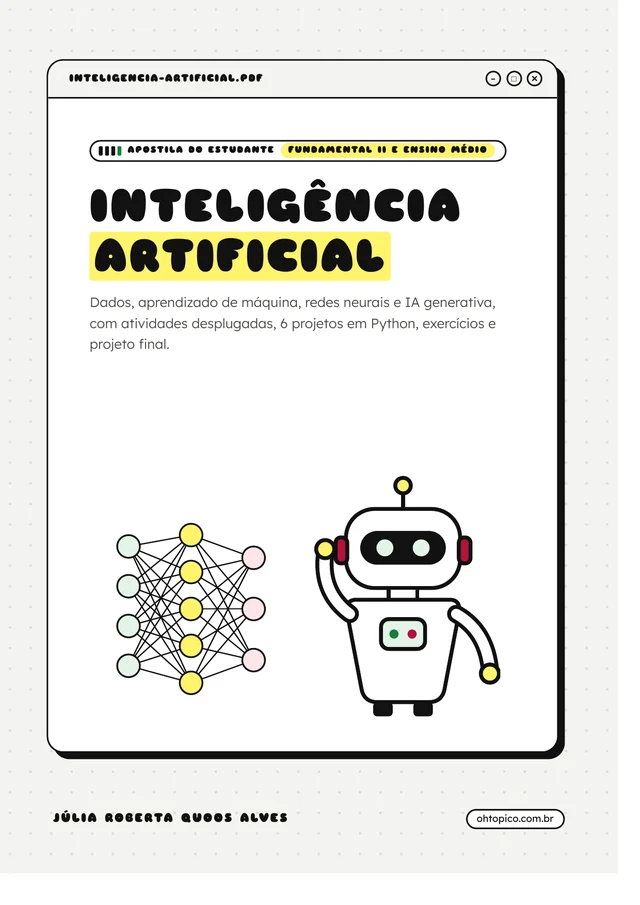
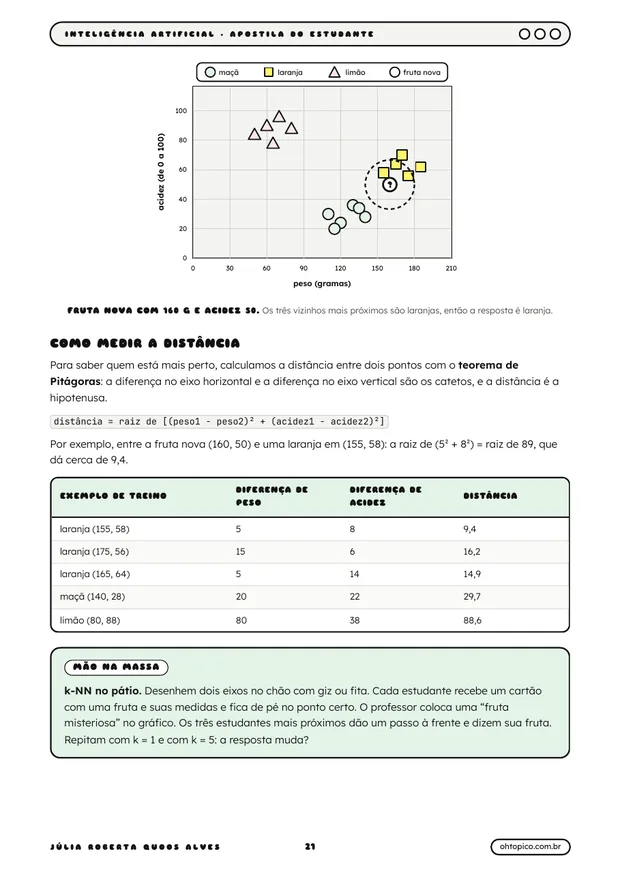
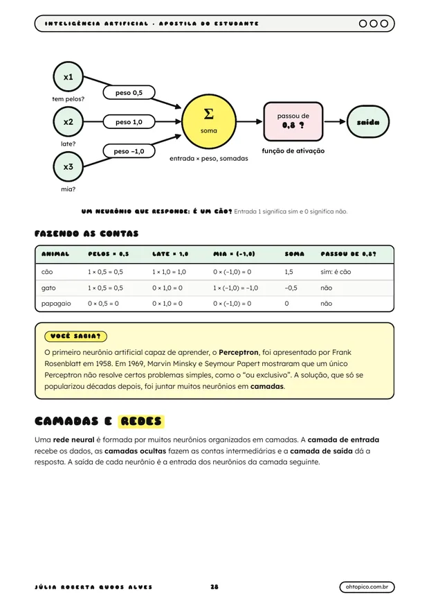

Inteligência artificial: apostila do estudante
Como a IA funciona por dentro, explicado para estudantes: dados, aprendizado de máquina, redes neurais, chatbots e geradores de imagem, uso responsável e ética. Com atividades desplugadas, 6 projetos em Python e um projeto final em equipe. Gratuita, em PDF.

Para turmas do 6º ano ao Ensino Médio
A apostila parte do zero: não é preciso saber programar. Os capítulos 1 a 10 podem ser trabalhados sem computador, com atividades desplugadas e ferramentas on-line gratuitas, como o Teachable Machine e o Quick, Draw!. Cada capítulo tem uma parte para todos e caixas de aprofundamento para estudantes do Ensino Médio, o que ajuda em turmas mistas. As habilidades da BNCC Computação trabalhadas aparecem na abertura de cada capítulo.
Do primeiro dado ao projeto final, em 12 capítulos
O que é inteligência artificial?
IA no cotidiano, história de Turing ao ChatGPT, IA estreita e geral, mitos e fatos.
Dados: a matéria-prima da IA
Dado, informação e conhecimento, tipos de dados, atributos e rótulos, qualidade e LGPD.
Como a máquina aprende
Regras ou exemplos, treinar e testar, aprendizado supervisionado, não supervisionado e por reforço.
Classificar: árvores e vizinhos
Árvore de decisão e k vizinhos mais próximos, com distância pelo teorema de Pitágoras.
Treinar, testar e medir
Acurácia, matriz de confusão, sobreajuste e atividade com o Teachable Machine.
Redes neurais
O neurônio artificial passo a passo, pesos, camadas e aprendizado profundo.
IA que vê e que ouve
Imagens e sons como números, filtros de borda, espectrograma e acessibilidade.
IA que escreve
Modelos de linguagem, próxima palavra, tokens, alucinações e geradores de imagem.
Usar IA com responsabilidade
Bons pedidos, checagem de fontes, proteção de dados, autoria e declaração de uso.
Ética, vieses e sociedade
Viés nos dados, deepfakes, trabalho, meio ambiente, princípios e leis.
Programando IA em Python
Chatbot de regras, sentimentos, árvore, k-NN, próxima palavra e perceptron.
Projeto final: IA a serviço da comunidade
Ciclo de projeto, ficha do modelo, papéis da equipe, cronograma e rubrica.
Também no PDF: referência rápida de Python, glossário com 38 termos, sites de apoio, ficha do projeto e ficha do modelo para imprimir, gabarito de todos os exercícios e referências.


Atividades com e sem computador
Árvore de decisão desplugada, k-NN no pátio, rede neural humana, modelo de linguagem de papel e tribunal da IA, além de atividades no Teachable Machine e no Quick, Draw!. Os seis projetos em Python foram testados e rodam no Google Colab ou no Python instalado no laboratório, sem bibliotecas extras.
Livre para usar em sala
Material de Júlia Roberta Quoos Alves, professora de computação no Rio Grande do Sul, sob licença CC BY-NC 4.0: pode copiar, imprimir e adaptar, com citação da autoria, sem fins comerciais. Todas as ilustrações são próprias.